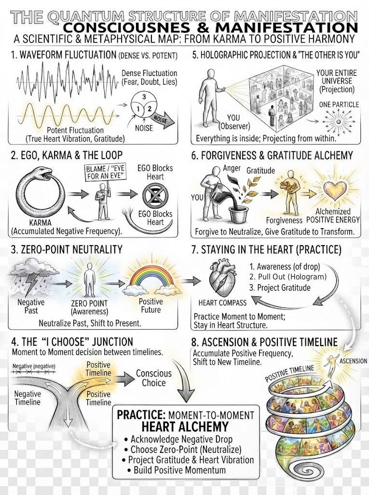

The Quantum Structure Of Forgiveness
Why forgiveness matters, how karma and lessons work, why answering harm with harm keeps the loop going, and how to train yourself to act from the heart (live Q&A)

Key teachings
14.1The person in front of you is your whole universe
The recording opens in the middle of a familiar teaching (see 2.1): when someone is upset with you, stop taking in their frequency and go to zero point. This creates a shield of awareness around you. From there you choose to act towards that person in the positive, which overrides the old frequency and starts a new hologram with a positive outcome. How it will turn out, you don't know; leave it open to infinite probabilities.
Why does this matter so much? Because the structure is fractal, moment to moment. Whoever you are talking to right now is, in that moment, your entire universe; move even slightly and you have already printed a new hologram with everyone in it (see 5.4, 11.5). Treat that person through the heart, with the best of your abilities, and your next moment is built on that vibration. Keep doing it and the moments add up to a positive timeline. Drop into the negative and stay there, and you fluctuate towards a negative timeline instead; whichever you hold more of is where you end up (see 2.3, 3.3).
14.2Why forgiveness: karma and lessons
Forgiveness is described as probably the most fundamental thing we have to do. Across many realities we have created many versions of ourselves, each taking on belief systems and interacting with people according to our agreements. Karma is accumulated frequency that is out of balance with the heart structure (see 3.2), and consciousness itself is based on the heart. If you deliberately hurt people or keep acting against others' interests, you accumulate that frequency and build a negative timeline.
When you then want to change, you come into a new hologram to learn the positive, and that learning comes through lessons, like playing a game. Everything you accumulated has to be transformed, and it works at 100%, not 99% (see 1.5): even one small thing left unresolved will come back into a hologram to be fixed. It may take more than one lifetime, depending on how well you learn. Think of a schoolyard and ask yourself: did I pass the lesson I agreed to, or did I add more negative because I didn't?
Why go through this at all? Because, at a higher level, you want to ascend: to move into less dense realities built on sharing and giving. You don't have to stay "in the mud"; it is a choice.
14.3Your biggest villain could be your biggest teacher
Because of what you accumulated, people will come to you by agreement to challenge you, even to do something hurtful, so that you learn that what you once did was out of balance with the heart. You may not remember doing it; it may have been in another life or timeline. That is why someone who hurts you can be your biggest teacher: they give you the chance to balance it.
Now you have a choice. You can go negative again, going after the person to "teach them a lesson", or you can transform it. This is why the knowledge matters: once you understand the structure, you see the challenge for what it is.
14.4"An eye for an eye" keeps the loop going
If you don't listen to your heart, which truly wants to love and be loved, anger, belief systems and dogma say "an eye for an eye." But in the quantum structure, going after someone is going after yourself, because they are your projection (see 1.8). You create another negative reality and accumulate more of the same. The teaching is careful here: it isn't judging people raised to believe revenge is right; it describes what happens in the structure, so you can choose.
Reality is a mirror, so what you project comes back, described as a "reverse osmosis". It won't be the exact same thing done to you, because there are infinite probabilities, but it will be something similar, because the structure mimics the vibration you gave it. That is why the same kind of situation keeps happening and doesn't clear.

14.5Old hurts belong to another timeline
Forgiveness also applies to the past. If something very hurtful happened to you, for example in childhood, and you keep thinking about it, you carry its frequency, the memory, into every new reality. But that timeline and the hologram you are in now are two completely different realities; the new one has nothing to do with the old (see 2.7, 9.6). So neutralize it at zero point with gratitude, and the old frequency stops entering your new hologram.
The way it is put: "I understand what happened to me. I understand it's in my past, but it's time to let go." That was a different version of you in a different hologram; it is now just a memory bank of another timeline. If the thoughts keep returning because the hurt went deep, keep projecting the positive through gratitude, again and again. The more you dwell on it, cry over it and talk about it, the more power you give it, and the loop recreates the same thing. This is exactly why Stop · Transform · Complete was given (see 7.1). For deep trauma, support from a qualified therapist can sit alongside this practice (see 6.6).
14.6The alchemy of consciousness: practise it
Knowing this makes you a master of the alchemy of consciousness: turning a dense, painful frequency into a positive one. It sounds easy; the practice is hard, and everyone says "I'm hit with a situation and I'm stuck." The answer: don't stay stuck, let it go. What helps most is to pull out and think "I'm a hologram", in a game: "If this is my hologram, I project everything. If I want something, it already exists somewhere in infinite probability, but I need to take an action."
Once this becomes normal, you think of something and it comes through synchronicity, without much effort, because it happens in the heart structure, where there are no conditions. Telling someone "to have this, you must give me something back" is the illusion. Give from the heart and leave it open; it will come back in some form you can't predict. And reverse the old rule: you don't have to see it to believe it; you project it, to create it, to see it (see 1.7).
14.7Training yourself to act well
Question: we've taken in a lot of knowledge, yet still carry the same behaviours, such as feeling worthless, lacking confidence and not trusting the process. How do we train ourselves to take beneficial action?
Start from the structure: everyone you deal with is a projection of yourself, the one particle printed as a different image, so when you talk to someone, you are talking to yourself through another hologram. We were trained to put conditions on each other, and to give power to a piece of paper; that is what created duality.
So when something brings you down: acknowledge that your emotion has dropped into a dense frequency, where the heart's frequency struggles to get through. Pull out and give gratitude to the image in front of you, since you chose that interaction. Then shift your emotion to the positive and ask: what can I do to change this? What can I do that is kind? For example, "I understand you're feeling this way."
If you're emotional or low, do something physical: dress up, put on good music, watch a good film, call a friend, go out, ski, swim, anything that calms you and lifts the emotion (see 6.7, 8.13). The same with what you see: on a cloudy day, give thanks for the cloud, because it is part of consciousness and you don't reject it, then project a beautiful, sunny day instead of tuning into the forecast of a storm (see 2.5). And when a challenge comes, thank it: "Thank you for being in my reality, so I can transform something that was out of balance." How else would you practise?
14.8Make your day a positive timeline
Complaining is also a loop: the more you talk about something, the more of it you create. Stop it, understand it, give gratitude, transform it and move on. And do it properly; 99% won't do it.
A practical tool: in the morning, write down the few things you have to do. If one feels heavy, such as going to the shop when you don't want to, plan how to lift it: dress up nicely, put on music, and give gratitude for your home, your clothes and everything else. Carry that vibration moment to moment and the whole day, which is a small timeline in itself, ends up positive.
14.9Why keep giving, even when tired
The talk ends with an example of its own teaching: giving the best of yourself even when exhausted, because the people in front of you are, in that moment, your whole universe, and how you act towards them without expecting anything back becomes your next moment. That is collecting positive heart structure. Someone might call that selfish; the answer is that it is transformation, done in order to live in an abundant reality, where whatever is needed can come from anywhere. The recording ends here, mid-sentence.
The method — Forgive and Transform
Use it when someone hurts or challenges you, or when an old hurt comes back:
- Acknowledge the drop. "My emotion just went dense."
- Pull out. "I'm a hologram, in a game. This person is my projection."
- Zero point. Stop taking in their frequency. "Thank you for being in my reality, so I can transform this."
- Forgive. Don't go after them, and don't replay it. If it's from the past: "That was another timeline. It's time to let go."
- Transform. Lift your emotion, with physical action if needed, and ask: what can I do that's kind?
- Move on. Leave it alone, and keep acting from the heart, moment to moment.
- If it returns, repeat with gratitude. Don't feed it by complaining or dwelling.